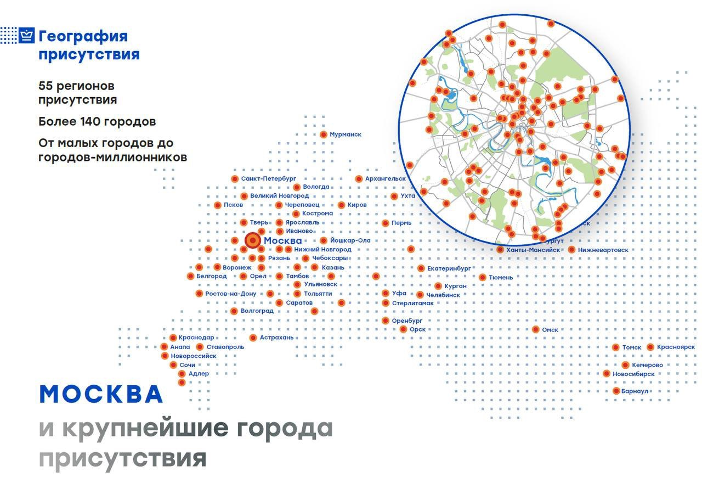
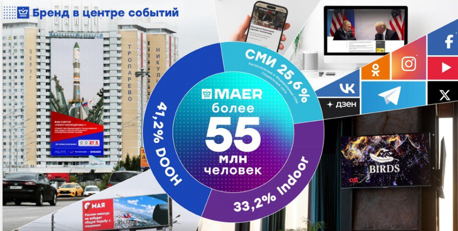
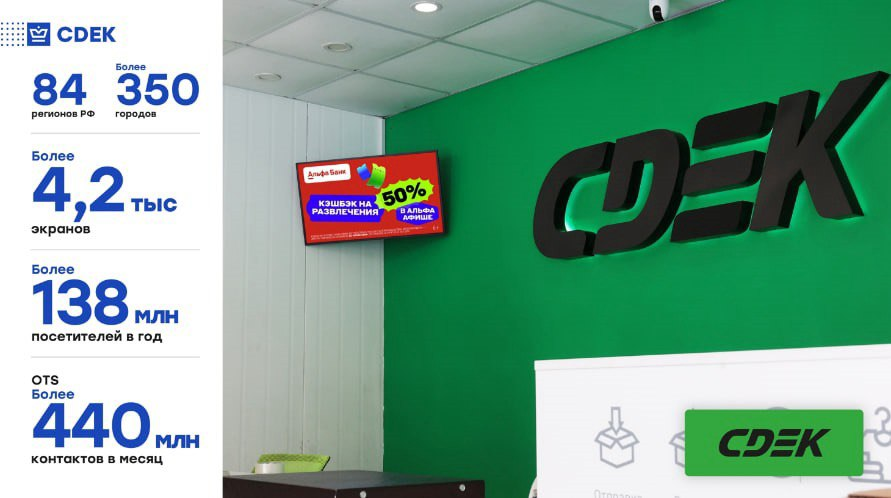
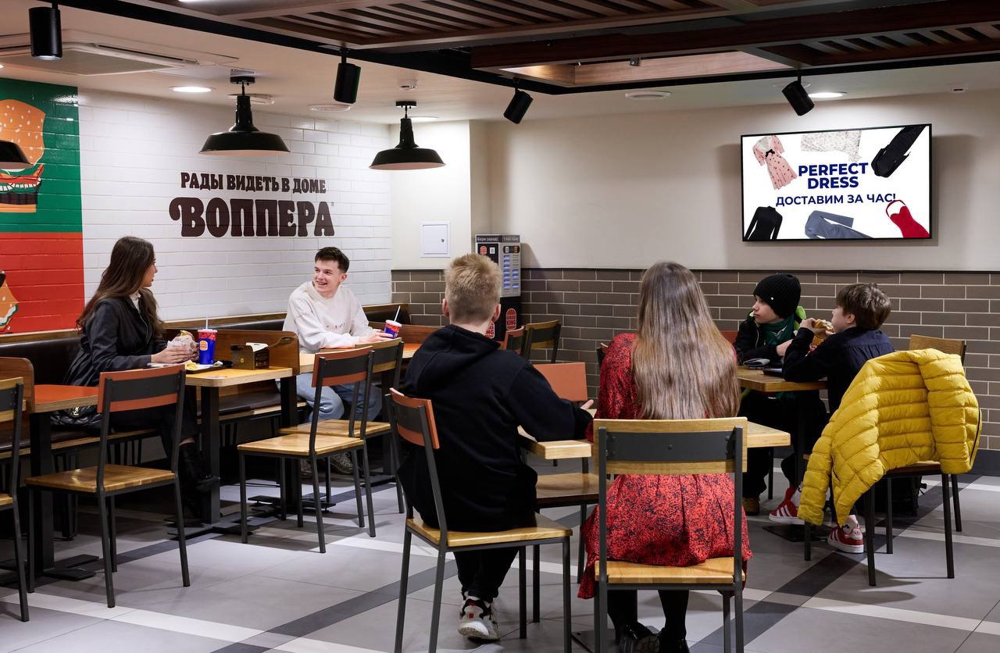
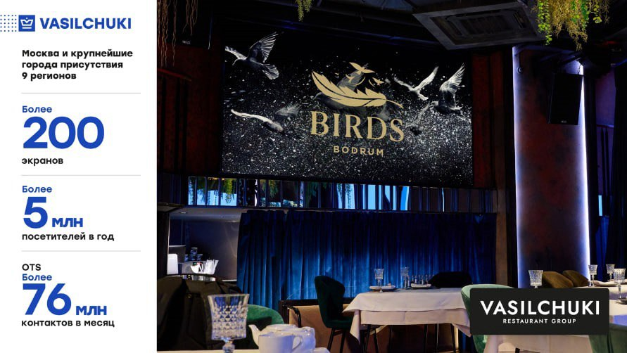
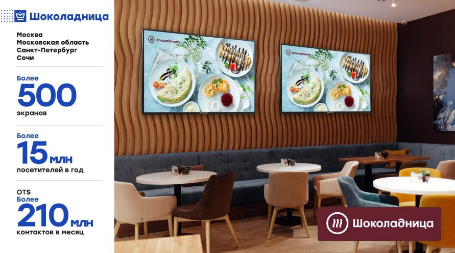
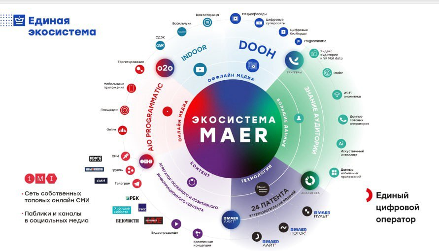

Медиахолдинг МАЕР — это системообразующая организация Российской Федерации, работающая на рекламном рынке более 20 лет. Предлагаем размещение рекламы:

Компания владеет крупнейшей высокотехнологичной цифровой сетью рекламных поверхностей для премиального охвата аудитории. География присутствия МАЕР охватывает свыше 40 регионов — от Санкт-Петербурга до Владивостока, обеспечивая информирование более 25% населения России и свыше 89% жителей Москвы. Экраны МАЕР расположены в самых оживлённых локациях; в сумме наш инвентарь генерирует более 26 млн визуальных контактов в сутки.
Организуем как масштабное размещение рекламы на всей территории РФ, так и локально в отдельно взятом городе или регионе.


4400 экранов по всей стране.
500+ панелей в 140 городах, 55 регионов.
60 премиум-локаций в 9 регионах.
запуск экрана летом по всей сети.
AIO Media предлагает размещение премиальных форматов (баннер и видео) на топ-площадках Рунета через собственную программатик-платформу AIO Premium.
Используются только крупные форматы (Intext Video, Rollup, Fullscreen) — не более трёх раз на одного пользователя за кампанию и не более одного показа в час.
Главное преимущество — использование обширной базы MAC-адресов с DOOH-конструкций МАЕР в Москве и городах-миллионниках.
По любым вопросам звоните или пишите по указанным контактам, отправлю дополнительную исчерпывающую информацию, а также предоставлю подробный расчет по Вашему запросу.
Приглашаем региональные рекламные агентства к сотрудничеству!